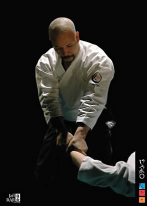

JAFF RAJIMITORI GEIKOvagyis az "intenzív, teljes lényünkkel történõ megfigyelés" "Ez a könyv a HANATSU és Jaff Raji közös munkájának gyümölcseként a szemünket csábítja utazásra. A képekhez Jaff-tõl származó, a Kan Geiko során elhangzott idézetek társulnak." Az album A4-es méretû és 128 oldal színes és fekete fehér fotót tartalmaz. A francia nyelvû rövid szövegek és idézetek angol és spanyol fordítása a könyv végén függelékként található. Magyar nyelvû melléklettel (teljes tartalom)! A könyv a dojo-ban, vagy e-mailben megrendelhetõ, illetve az alábbi helyeken is megvásárolható: A könyv eredeti ára: 34 Euro ~ 9.500 Ft Új ár : 5000 Ft
>>>video letöltés a honlapról (wmw)
>> Beszélgetés Jaff Rajival a könyv kapcsán
Az alábbiakban a könyv bevezetõjét olvashatjátok, illetve néhány mintaoldalt láthattok.Minden évben megtartom azt az õsi harci hagyományt, amelyet kangeiko-nak, vagyis téli edzésnek neveznek. Ez az alkalom lehetõséget ad iskolánk tanítványai és az Ecole de BUDO-RAJI nemzetközi testvériség tagjai számára, hogy egy teljes héten keresztül intenzíven együtt gyakoroljanak, kora hajnaltól. Nekem ez az intenzív hét az általam gyakorolt és oktatott három harcmûvészeti ág, az AIKIDO, a JODO, és az IAIDO összekapcsolásáról szól, közös eredetük, az õsi japán kard, vagyis a KATANA segítségével. A karddal való gyakorlás célja a hétköznapi életünk megváltoztatása. A kard, a szamuráj lételeme. Mivel a kard nagy mértékben befolyásolta az évszázadokat, a történelem folyamán megteremtette azt a termõföldet, amelyben ez a három harcmûvészeti ág, a többi Budôval együtt megszületett. Napjainkban a világ minden táján az emberiség jobbításának céljával oktatják ezeket a harcmûvészeti ágakat. Önmagunk tanulmányozásán keresztül lehetõséget kapunk viselkedésünk megváltoztatására. Önkéntes börtön által élõ testtel szabadulhatunk. A BUDO lehetõséget nyújt az emberi kapcsolatok újrateremtésére a mindennapi életben. A párbaj életet ad. De hogyan lehet újraalakítani a mély rétegekbõl származó energiákat ? Ez a 2007-es KAN GEIKO vezérfonala, a MITORI GEIKO, az intenzív teljes lényünkkel történõ megfigyelés. A KAN GEIKO egyben egy pont térben és idõben is, ahol lehetõvé válik az akarat fejlesztése, ahol valóra válhatnak egyéni célok, és különleges pillanatok élhetõk át. Kevés dologvan, ami bebörtönöz; a megszokások erején az önmagunkon végzett munkán keresztül kerekedhetünk fölûl. “Mi vagyok én e nélkül... és ezzel?“ Nincs abszolút. Ahány ember, annyi stílus, ami fölött nem ítélkezhetünk. De figyelembe vehetünk, vagy egyszerûen csak megfigyelhetünk: MITORI GEIKO, íme a szabadság. JAFF RAJI Ez a könyv a HANATSU és Jaff Raji közös munkájának gyümölcseként a szemünket hívja útra. A képekhez Jaff-tõl származó, a Kan Geiko során elhangzott idézetek társulnak. Egy mozdulatsornak nincs szüksége szóbeli magyarázatra. A szemben álló testek dialógusában a halálon felülemelkedve gazdagodik az élet, önzetlenül, bizalommal telve. A 2007-es Kan Geiko pedagógia célkitûzése, a láthatatlan láthatóvá tétele állandóvá téve a MITORI GEIKOt : a test memóriájához fordulást, a látásra hagyatkozva tanulást. Az esemény lezárásaként, a HANATSU társaság “ACCORD PORTES” címmel elõadott egy koreográfiát a résztvevõ tanítványoknak. Ez az elõadás egy más szemszögbõl adott lehetõséget a megfigyelés és memória csiszolására. YON - LISA B - MAKO Betekintésért kattints a képre: A képek jobb alsó sarkára kattintva lapozhatsz! |
{kind=link}
|
| Tenjinchi Dojo | EBR International | Raji Ukemi Fitness | Aikido | Jodo | Iaido | Gyerekcsoport | Órarend | Tanárok Hírek/Események | Fotók / Videók | Olvasnivaló | Linkek |